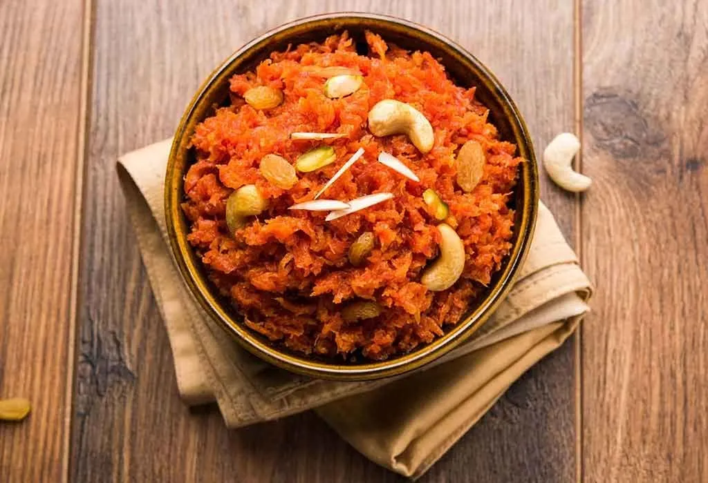

GAJAR KA HALWA

Gajar halwa is made quite often at our place during winters. During winters it is a different fun altogether to eat a piping hot bowl of halwa.
Ingredients
- 1.5 kilogram carrots or 9 cups tightly packed grated carrots
- 6 tablespoons Ghee or clarified butter
- 2 cups khoya or mawa - grated or crumbled (evaporated milk solids) or 400 to 410 grams
- 1 to 1.25 cups sugar or add as required
- 1.5 to 2 teaspoons cardamom powder or 8 to 9 green cardamoms – powdered in a mortar-pestle
- 1 tablespoon pistachios, chopped or slivered – optional
- ⅓ cup cashews, or add as required
- ⅓ cup golden raisins or add as required
Steps-by-Steps
- Heat 6 tablespoons ghee in a deep bottomed heavy pan or kadai. Add 9 cups tightly packed grated carrots.
- On a low heat, sauté carrots in ghee, stirring often until they turn tender and are cooked – about 15 to 20 minutes.
- Add 2 cups of crumbled or grated khoya (a.k.a. mawa or evaporated milk solids).
- First mix thoroughly.
- Then add 1 to 1.25 cups sugar. Adjust the amount of sugar depending upon the sweetness of your khoya. If your khoya is sweet, start with just 1 cup of sugar.
- Combine and mix well.
- You will see that both the khoya and sugar will melt
- Now add ⅓ cup of cashews, ⅓ cup golden raisins, 1 tablespoon pistachios (chopped) and 1.5 to 2 teaspoons cardamom powder.
- Mix again and, stirring often, simmer gajar halwa on low heat. The halwa will start thickening, reducing and leave the edges of the pan. When you see these signs, switch off the heat.
- Serve gajar ka halwa either warm or chilled.